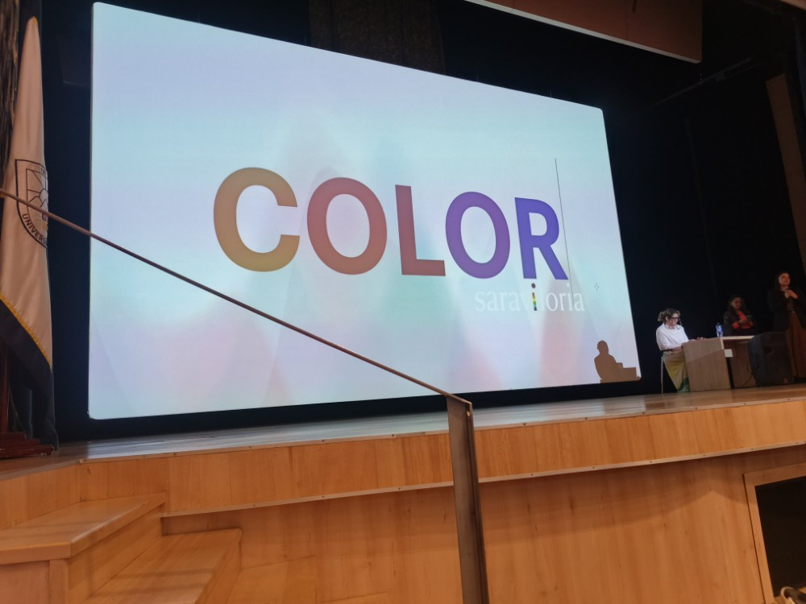
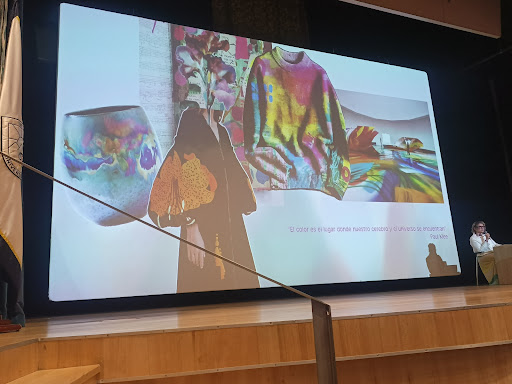
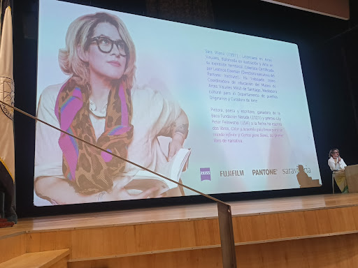
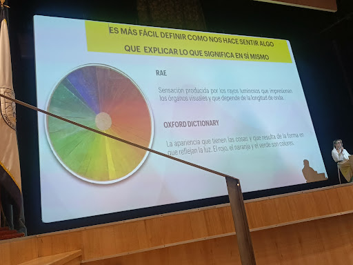
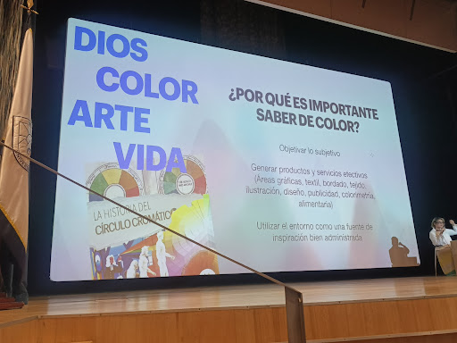
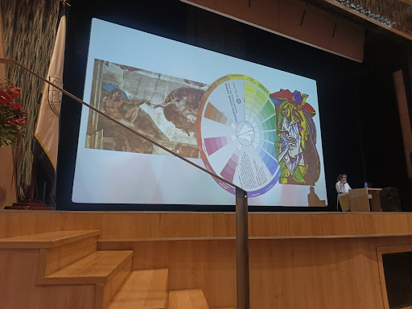
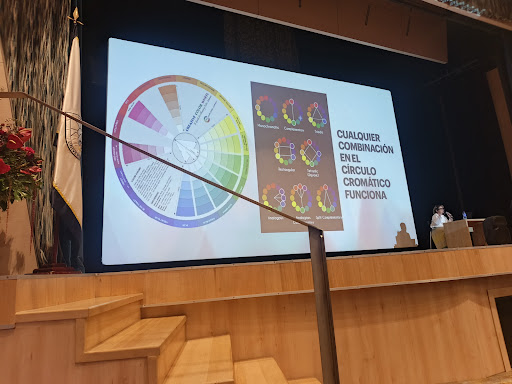
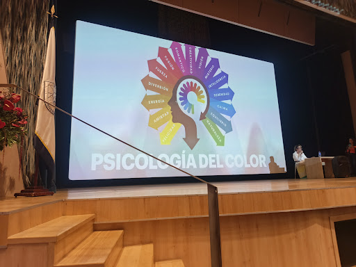
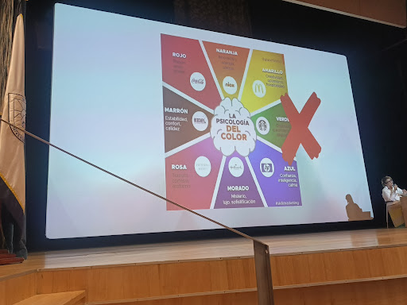

Galería

inicio de la intervención de la ponente experta Sara Viloria en Moda ECCI, abordando el impacto del color en proyectos de diseño y su relevancia metodológica en la industria actual.

Análisis conceptual sobre cómo el color se materializa en prendas de vestir, objetos de diseño y espacios tridimensionales, complementado con la premisa del artista Paul Klee: "El color es el lugar donde nuestro cerebro y el universo se encuentran".

Revisión del perfil académico y profesional de la ponente como Licenciada en Artes Visuales y Colorista Certificada por el Pantone Institute, destacando su experiencia internacional y sus aportes bibliográficos a la investigación del color.

Estudio de la teoría del color desde perspectivas lingüísticas y científicas, analizando el contraste entre la definición física del fenómeno lumínico y la complejidad de explicar su significado intrínseco más allá de la sensación percibida.

Exposición sobre la necesidad de objetivar lo subjetivo a través del estudio cromático, demostrando cómo su correcta administración impacta positivamente el desarrollo de productos y servicios en las industrias textil, gráfica, de diseño y publicitaria.

Análisis comparativo del uso del color a lo largo de la historia del arte, examinando cómo las armonías cromáticas y las propiedades técnicas de la rueda de color estructuran la composición visual tanto en el Renacimiento clásico como en las vanguardias expresionistas.

Estudio técnico de las armonías de color fundamentado en la geometría del círculo cromático, detallando la correcta aplicación de esquemas complementarios, tríadas, análogos y composiciones tetrádicas para el desarrollo de proyectos visuales equilibrados.

Explicación técnica sobre la flexibilidad y el funcionamiento sistémico de las combinaciones cromáticas, demostrando que cualquier estructura geométrica aplicada sobre el círculo —desde lo monocromático hasta lo tetrádico— genera una respuesta visual armónica y funcional para el diseño.

Análisis del impacto neuro-emocional y psicológico de los estímulos cromáticos en el ser humano, examinando cómo los diferentes matices influyen de manera directa en las sensaciones, conductas, percepciones y experiencias de los usuarios.

Discusión crítica planteada por la ponente sobre las simplificaciones comerciales en el marketing, cuestionando los esquemas rígidos que asocian marcas globales con emociones únicas y promoviendo un análisis más profundo del color en el branding.